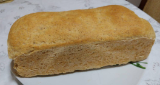
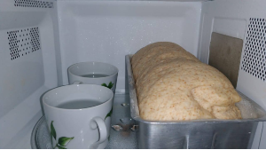

Pão Integral - 25%

Pão integral além de saboroso é saudável !
Ingredientes:
- 1 e 1/4 de xícara (chá) de água;
- 1/4 de xícara (chá) de óleo;
- 1 e 3/4 de colher (chá) de sal;
- 2 colheres (sopa) de açúcar (pode ser o açúcar mascavo);
- 1 xícara (chá) de farinha de trigo integral;
- 3 xícaras de farinha de trigo branca;
- 1 colher (sopa) de farinha de linhaça;
- 1 colher (chá) de amido de milho;
- 5 castanhas do Pará bem picadinhas (opcional);
- 2 e 1/2 colheres (chá) de fermento biológico seco;
Modo de Preparo:
- Em um recipiente grande, coloque todos os ingredeintes e misture com as suas mãos;
- Sove bem a massa até desgrudar das mãos (pode ir adicionando farinha aos poucos até desgrudar);
- Unte uma forma de bolo inglês com manteiga e farinha;
- Deixe a massa descansar, até dobrar de tamanho, dentro do micro-ondas DESLIGADO da tomada ou no forno, também desligado, com uma xícara de água morna ao lado da forma;

- Asse em forno pré-aquecido a 180C, por aproximadamente 30min.